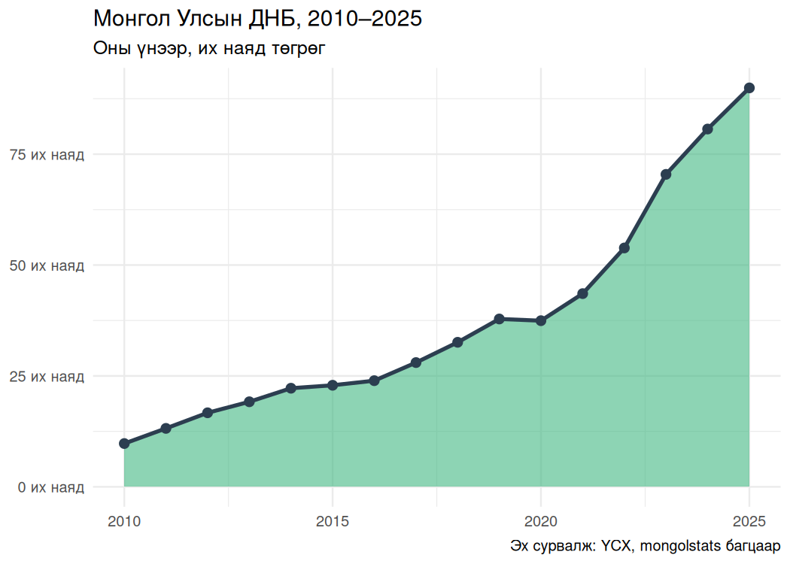
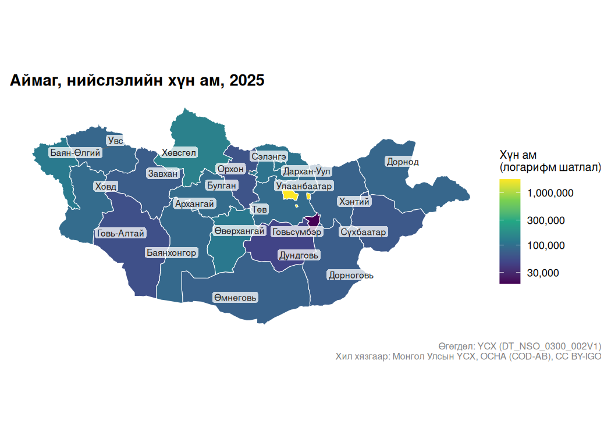

Монгол Улсын албан ёсны статистикийг R орчинд татах, эх сурвалжийг нь шалгах, үзүүлэлтийг дүрслэх багц. Үндэсний статистикийн хорооны (ҮСХ) нийтэд нээлттэй хүснэгт, үзүүлэлт, мета өгөгдөлтэй ажиллана.
Юу хийж болох вэ?
- ҮСХ-ны олон мянган хүснэгтээс хэрэгтэй үзүүлэлтээ хайх.
- Өгөгдлийг англи эсвэл монгол тайлбартай хүснэгтээр татах.
- Он, сарыг өөрчлөгдөх байрлалын дугаараар бус,
"2024","2024-03"зэрэг тогтвортой тэмдэглэгээгээр сонгох. - Өгөгдлийн эх сурвалж, нэгж, анхны тэмдэглэгээ, сонголтыг хадгалах.
- mongolmaps багцтай хамт аймаг, нийслэл, дүүргийн үзүүлэлтийг газрын зураг дээр харуулах.
Анхны шинжилгээ: дотоодын нийт бүтээгдэхүүн
ДНБ-ий оны үнийн дүнг татаж, их наяд төгрөгөөр дүрсэлье. ҮСХ-ны энэ хүснэгтийн утга сая төгрөгөөр өгөгддөг тул их наяд төгрөгт шилжүүлэхдээ 1,000,000-д хуваана.
gdp <- nso_data(
"DT_NSO_0500_001V1",
selections = list(
"Statistical indicator" = "GDP, at current prices",
"Economic activity" = "Total",
Year = nso_period_seq("2010", "2025")
)
)
gdp |>
ggplot(aes(x = nso_period_date(Year), y = value / 1e6)) +
geom_area(fill = "#42b883", alpha = 0.6) +
geom_line(color = "#2c3e50", linewidth = 1.2) +
geom_point(color = "#2c3e50", size = 2.5) +
scale_y_continuous(labels = scales::label_number(suffix = " их наяд")) +
labs(
title = "Монгол Улсын ДНБ, 2010–2025",
subtitle = "Оны үнээр, их наяд төгрөг",
x = NULL, y = NULL,
caption = "Эх сурвалж: ҮСХ, mongolstats багцаар"
) +
theme_minimal(base_size = 12)
Одоор (*) тэмдэглэсэн он нь ҮСХ-ны урьдчилсан дүнг заана. Өөр өөр оны мөнгөн дүнг харьцуулахдаа үнийн өөрчлөлтийг тооцох шаардлагатай.
Хүн амыг газрын зураг дээр харуулах
ҮСХ-ны газар зүйн кодоор хүснэгтийг хил хязгаартай холбоно. mn_join() нь аймаг, нийслэлийг сонгож, улсын болон бүсийн нийт дүнг давхар тоолохоос сэргийлнэ.
population_table <- "DT_NSO_0300_002V1"
latest <- nso_latest_periods(population_table)
population <- nso_data(population_table, selections = list(Year = latest))
population |>
mn_join(by = "Region", level = "aimag") |>
mn_map(
fill = value, trans = "log10", lang = "mn", label = TRUE,
title = paste("Аймаг, нийслэлийн хүн ам,", latest)
) +
labs(
fill = "Хүн ам\n(логарифм шатлал)",
caption = paste(
"Өгөгдөл: ҮСХ (DT_NSO_0300_002V1)",
"Хил хязгаар: Монгол Улсын ҮСХ, OCHA (COD-AB), CC BY-IGO",
sep = "\n"
)
)
Улаанбаатар болон цөөн хүн амтай аймгийн ялгааг зэрэг харахын тулд логарифм өнгийн шатлал ашиглав.
Эх сурвалж, мета өгөгдөл
Үзүүлэлтийн тодорхойлолт, нэгж, хамрах хүрээг шалгасны дараа өгөгдлөө татна. Экспортлохдоо хүснэгтийн дугаар, сонгосон хугацаа, эх сурвалжийн тэмдэглэгээг хамт хадгалаарай.
nso_indicators("GDP")
nso_indicator("gdp_current")
gdp <- nso_indicator_query("gdp_current", periods = c("2023", "2024")) |>
nso_fetch(labels = "mn")
nso_table_info(gdp)
nso_citation(gdp)
nso_check_data(gdp)
nso_write_manifest(gdp, "gdp-provenance.json")Албан ёсны тодорхойлолт, асуулга, ангиллыг мета өгөгдлийн сангаас хайж болно:
nso_metadata_search("хүн ам", type = "all")
nso_metadata("indicator", 12925, include_raw = TRUE)PXWeb болон бусад порталын хүснэгтийн дугаар, газар зүйн кодыг шууд адил гэж үзэж болохгүй. Эдгээр туршилтын үйлчилгээний бүтэц өөрчлөгдөж болно. Зарим системд мета өгөгдлийн серверийн сертификатын гинжийг шалгах үед холболтын алдаа гарч болзошгүй.
Лиценз ба ишлэл
Багцын код MIT лицензтэй. ҮСХ-ны өгөгдлийн эх сурвалж, зохиогчийн эрх, лицензийг COPYRIGHTS файлаас үзнэ. Өгөгдөл ашигласан бүтээлдээ ҮСХ болон хэрэглэсэн эх сурвалжаа дурдана уу.